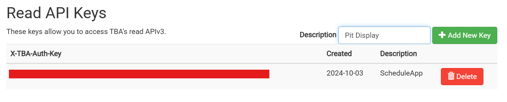
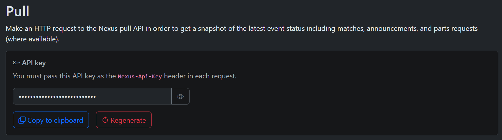

How to Get API Keys from The Blue Alliance and FRC Nexus
The Blue Alliance
- Go to The Blue Alliance website.
- Log in or create an account if you don't have one
- Navigate to your account settings
- Find the section labeled "Read API Keys"
- Enter the name for your application (ex. Pit Display), and click "Add New Key"

- Copy and paste into the "TBA API Key" field on the settings page
FRC Nexus
- Go to the FRC Nexus website.
- Navigate to the bottom of the page and click "API"
- Log in or create an account if you haven't already
- Find the section labeled "Pull"
- Click "Create API Key"

- Copy and paste into the "Nexus API Key" field on the settings page
Back to the app